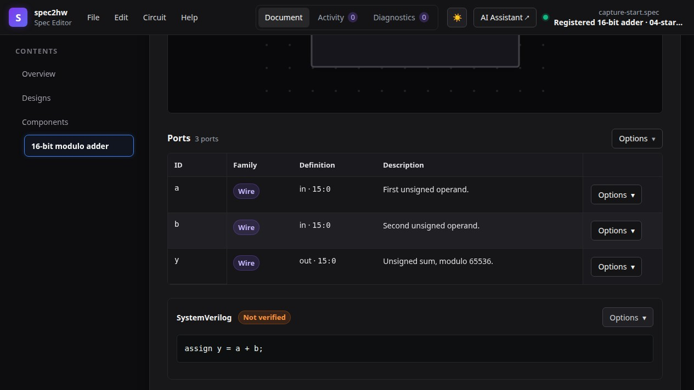
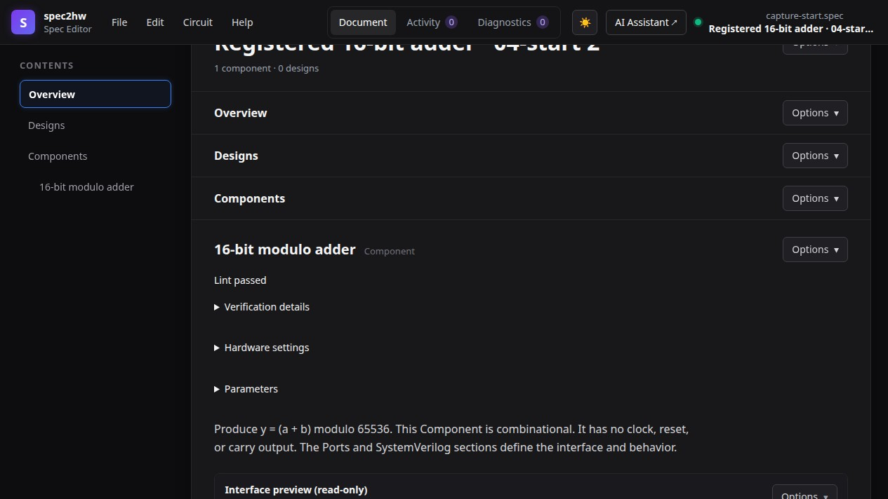

CORE 03 / 09 · 6 MINUTES
Add hardware behavior
Save adder logic and run an explicit lint check.
Before you start
Spec Editor and Verilator 5.x on the service host. Use the saved three-port adder.
Actions
- In the adder Component, select Options → Add SystemVerilog section…. Paste this module body, then select Add section.
assign y = a + b; - Keep
module,endmodule, port declarations, and module headers out of this Section. The Activity builds those from the saved interface. An explanation alone does not implement behavior.


- Select Verify Component. Wait for Lint passed. Expand Verification details to inspect the checked target, source revision, and resolved widths.
- Select Options → Preview interface. Inspect the embedded Interface preview (read-only). It shows one leaf Component with three terminals. It does not invent an internal circuit from the assignment.
- Reopen the Spec. The SystemVerilog text persists. Verification results can require a new check after a reload or source change. Lint checks source and interface consistency; functional simulation remains unverified.


Check your result
The saved SystemVerilog section contains the assignment. The explicit check reports Lint passed for the current saved source. The preview has exactly three terminals.
Try it yourself
Open Edit on the SystemVerilog section, add a source comment, and save. Check whether the verification becomes out of date, then run Verify Component again.
If it fails
If the compiler is missing, the result is Not verified. Ask the environment maintainer to install Verilator. If lint fails, inspect its diagnostic and fix the saved SystemVerilog. A saved body can still contain a compiler error.
Continue
NEXT GUIDECreate a Component with AI AssistantReference: rtl generation · Complete example